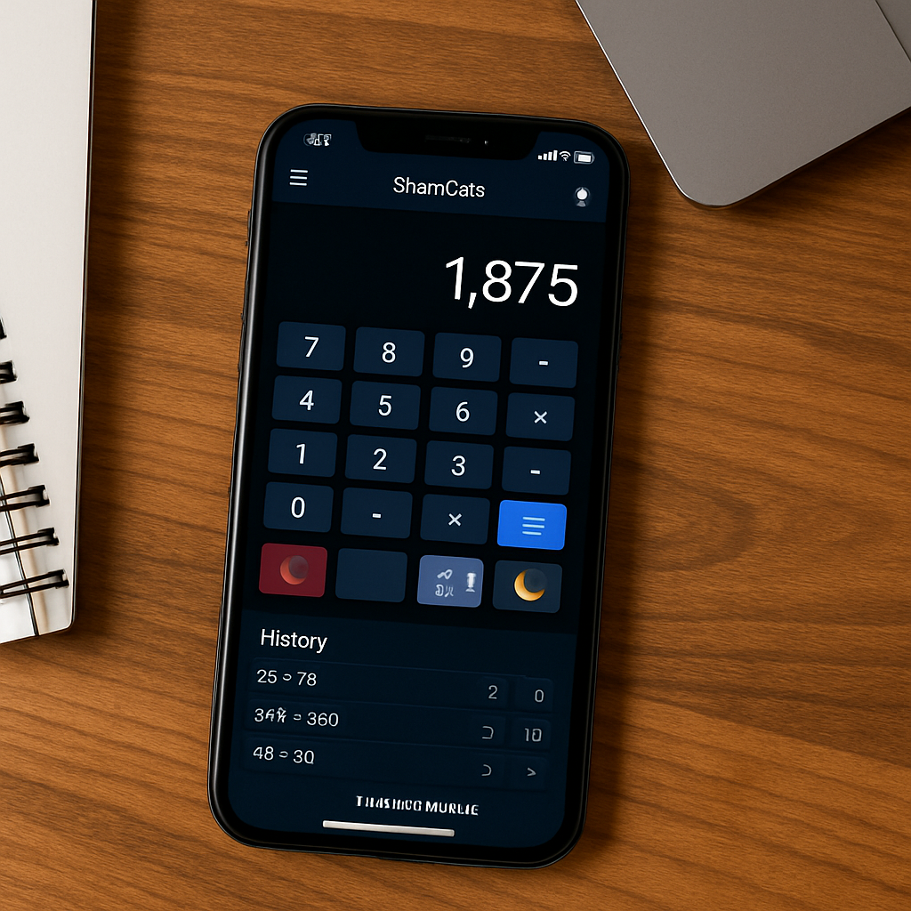
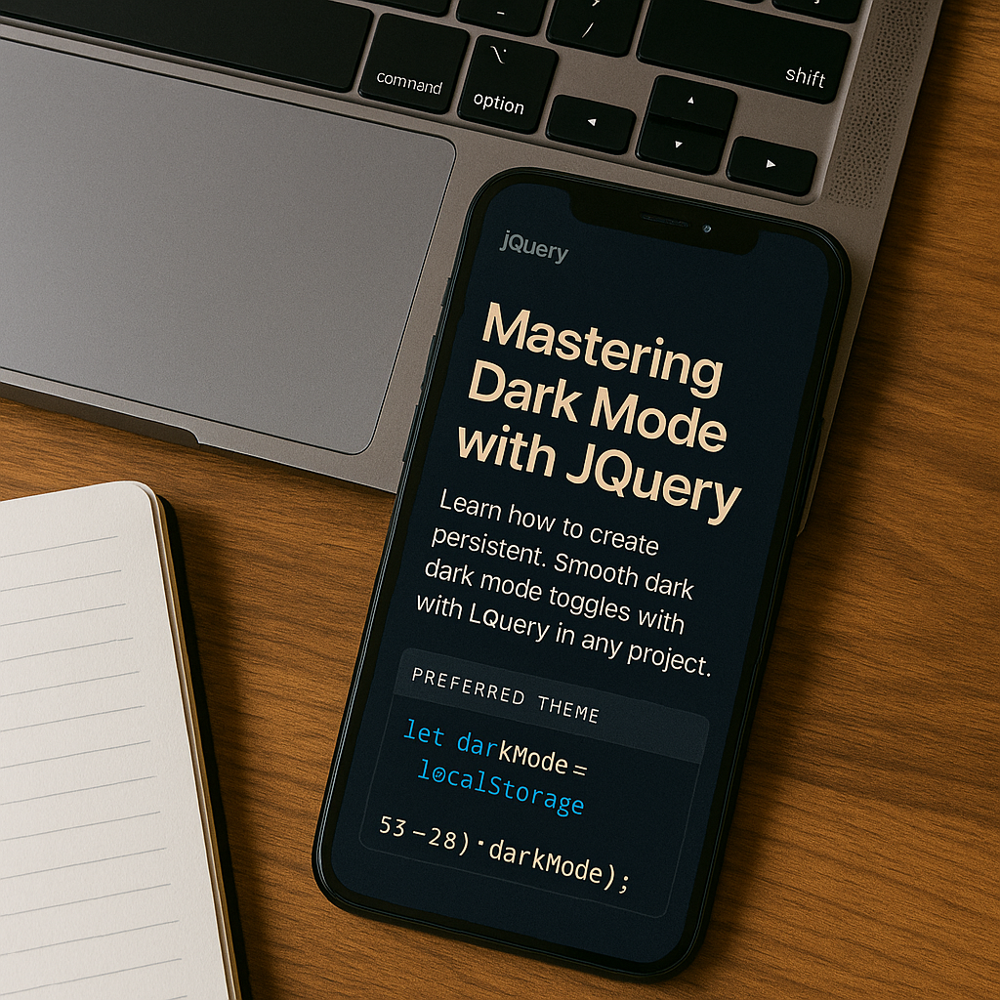

How I Built a PWA Calculator
Posted on July 2, 2025 • Tools: HTML, JS, Math.js
SmartCalc was my first serious attempt at blending UI with functionality. It features dark mode, keyboard input, scientific buttons, and even saves your history using localStorage.
One of the best parts was learning to integrate math.js for scientific evaluation. This helped me avoid manual parsing logic.
This wasn’t just about making a calculator — it was about making *my own tool* that felt smooth, smart, and usable. I’d used boring online calculators before, and I thought, “Why not build something cleaner and more powerful myself?”
I faced loads of small problems — from managing float precision to handling keyboard shortcuts without breaking the UI. But that’s where the learning happened. Every bug was a lesson in disguise.
The best moment? Watching the app run offline for the first time after setting up the manifest and service worker. That tiny “Install” prompt felt like a badge of honor.
JavaScript
PWA
UI/UX

Dark Mode Toggle with jQuery
Posted on July 3, 2025 • UX Focused
I created a clean, animated dark mode toggle using just a few lines of jQuery. It stores your preference in localStorage so it remembers your choice even when you revisit.
Dark mode is essential in today’s UI — not just for looks, but for accessibility and comfort during night-time browsing.
I’ve always been that guy who flips on dark mode the second it’s available. So naturally, I wanted my blog to respect that choice too. This wasn’t about being trendy — it was about respecting how people actually browse.
The toggle button started off plain, but I kept tweaking the animations and placement until it *felt right*. Smooth transitions, saved preferences... those are the touches that make an interface feel like it knows you.
Looking back, it’s wild how just 5–6 lines of jQuery can add so much life to a site.
jQuery
Dark Mode
Blog Design Principles
Posted on July 4, 2025 • Design
I follow 3 key principles in blog layout design: whitespace, mobile-first thinking, and a consistent color scheme. These principles are visible across this blog site.
This project helped me solidify how to work with flex/grid systems, spacing, and balance aesthetics with function.
Designing this blog wasn’t just “make it look nice.” I wanted it to feel *quiet*, like stepping into a personal space. I leaned into generous spacing because I hate cluttered layouts that try too hard.
I also built mobile-first — mainly because I read most blogs on my phone while lying on the couch. If it didn’t feel good there, it didn’t belong in the design.
The hardest part? Finding the right color scheme. It took me 3–4 versions before landing on something that wasn’t too loud but still had character. Deep purples and cool tones just... clicked.
Design
Mobile-First
Best Practices